Kitchen
Refrigerator & Freezer
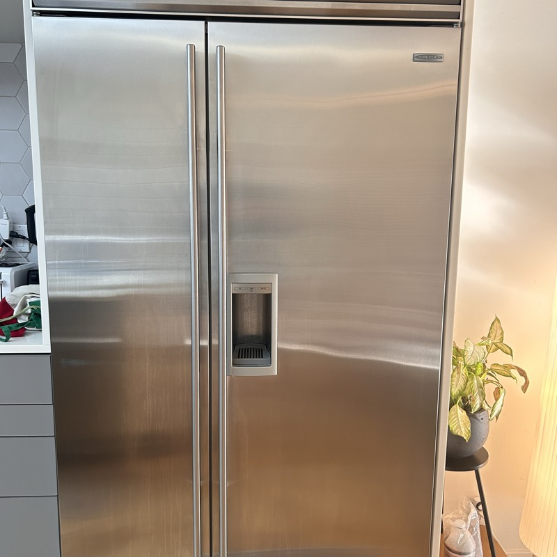
- Both the water and ice dispensers work on this refrigerator.
- Sometimes the ice can get a little stuck in its bin — you may hear the dispenser whirring but no ice comes out.
- If that happens, open the freezer — the ice bin is stored up top.
- Grab the bin and give it a little jiggle to knock the ice loose, and the dispenser should work perfectly after that.
Stove Top
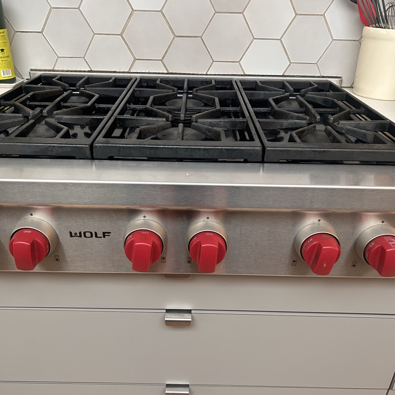
- The front right burner is marked — do not use. The igniter has always been finicky on that one and has been repaired many times without success.
- All other five burners work great — use them freely.
- If you truly need all six burners, you can turn the front right on and light it with a match if you're comfortable doing so.
- After the stove has been cleaned, the small caps on top of the burners can shift out of position and a burner may struggle to light.
- If a burner won't ignite, give the center cap a little jiggle to make sure it's properly seated — it should light right up.
Dining Room
Sonos Sound System
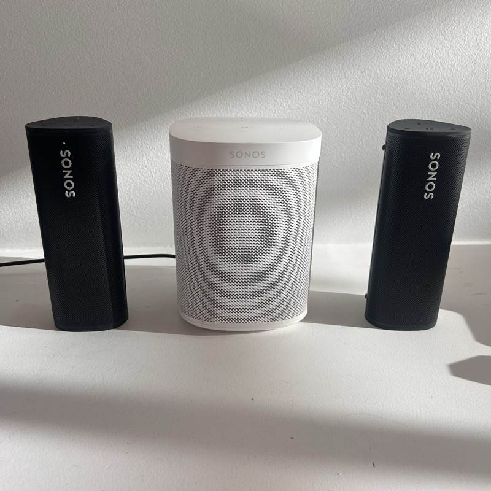
- There are four Sonos units — one next to the dining room table, one on the TV room bookshelf, one on the table by the front door, and one on the downstairs office bookshelf.
- The two by the front door and office are portable — take them out to the pool or backyard whenever you like.
- Please plug them back in when you're done so they're charged and ready for the next guests.
- Open any music app (Spotify, Apple Music, etc.), tap the AirPlay icon, and you'll see all four rooms listed.
- Connect to any combination of Dining Room, Family Room, Living Room, and Office.
TV Room
Gas Fireplace
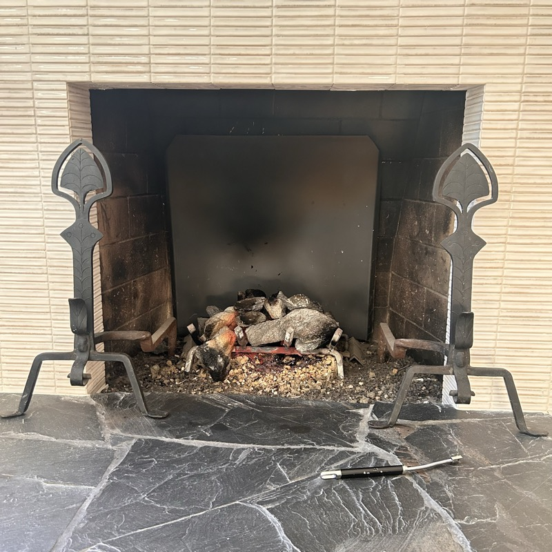
- To light, turn the valve on the fireplace about a half turn counterclockwise to open the gas.
- Then use the long lighter (sitting on the hearth) to ignite — it'll make a big whoosh sound, but that's completely normal.
- The fireplace puts out a lot of heat and really warms up the room nicely.
- To shut it off, turn the valve clockwise until it's snug — the flame will go out automatically.
- The coals may keep glowing for a little while after you turn it off — that's normal. As long as the valve is fully closed, it's off.
Board Games & Records
The TV room has a curated collection of board games and a record player with a selection of vinyl — feel free to dig in.
- Board games are stacked in the cabinet below the TV — a mix of classics and crowd favorites.
- The record player sits on the shelf in the corner. Records are in the wooden crate beside it — browse and play anything you like.
- To use the record player, lift the dust cover, place the record on the platter, and gently lower the needle arm onto the edge of the vinyl.
Back Yard
Barbecue
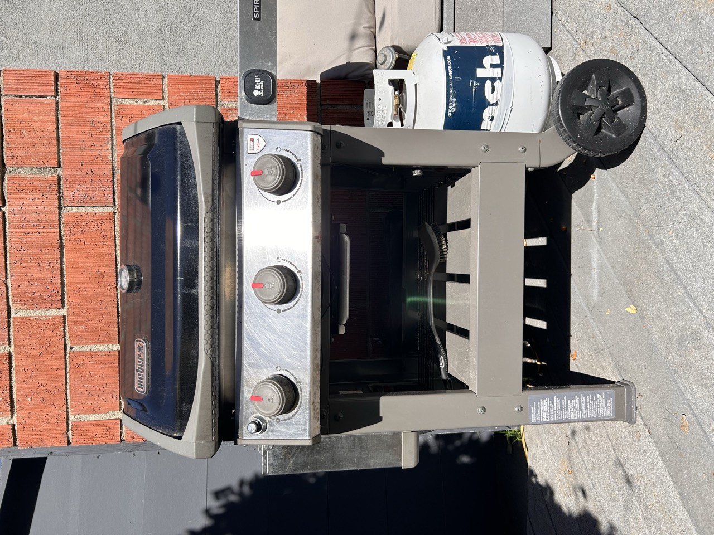
- Feel free to use the barbecue!
- Before lighting, turn on the propane tank valve on the right side of the grill.
- Turn the propane tank off when you're done — this keeps things safe and extends the tank life.
- BBQ utensils are in the lowest drawer to the left of the refrigerator in the kitchen — same drawer as the outdoor glasses and plates.
Gas Fire Pit
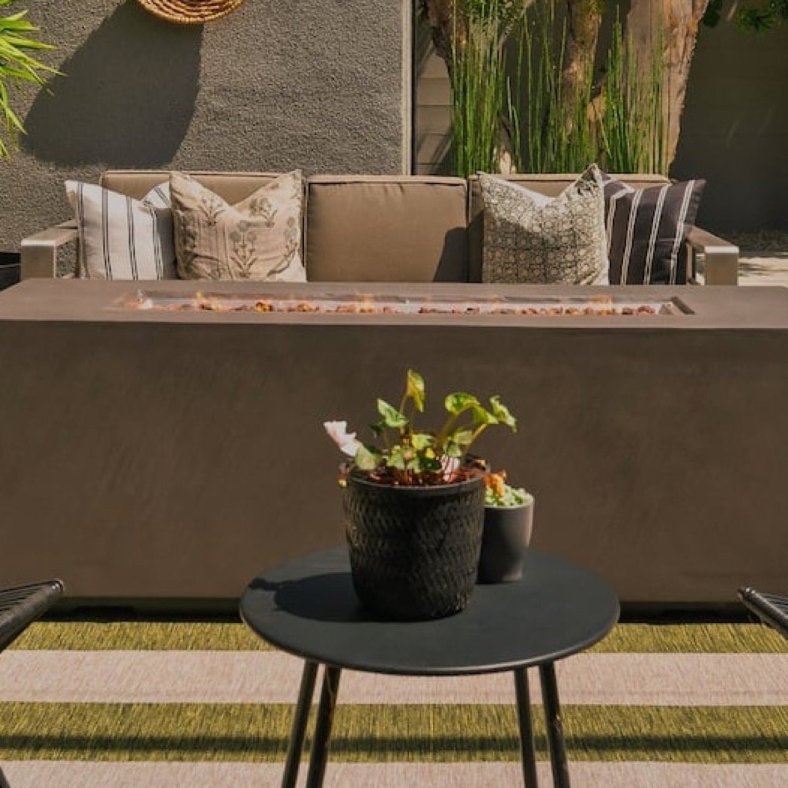
- On the end closest to the pool, open the panel and make sure the gas bottle valve is open.
- On the side closest to the couch, find the knob and ignition button.
- Turn the knob about a quarter turn, then press and hold the ignition button — keep holding the knob for a couple seconds until the flame catches.
Pool
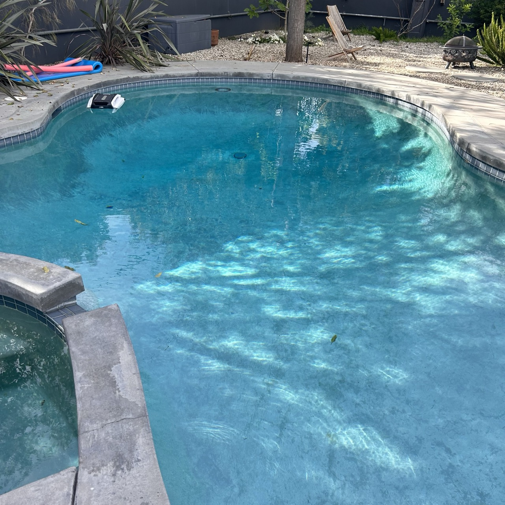
- Start at the valve panel behind the bush near the hot tub — make sure all handles point toward Pool Return and Pool Suction so water flows through the pool.
- Follow the wall to the cabana where the heater and pump are located.
- On the pump control panel, press button 2 to increase pump speed to heating mode (button 1 is just the daily filtration setting).
- On the heater, select Pool, then use the up/down arrows to dial in your desired temperature.
- Depending on outside temp and how warm you want the water, it may take a couple hours to heat up — best to start it first thing in the morning on days you plan to swim.
Pool Rules
- 🚫 No diving
- 🚫 No running or horseplay around the pool
- 🚫 No glassware around the pool or spa
Hot Tub / Spa
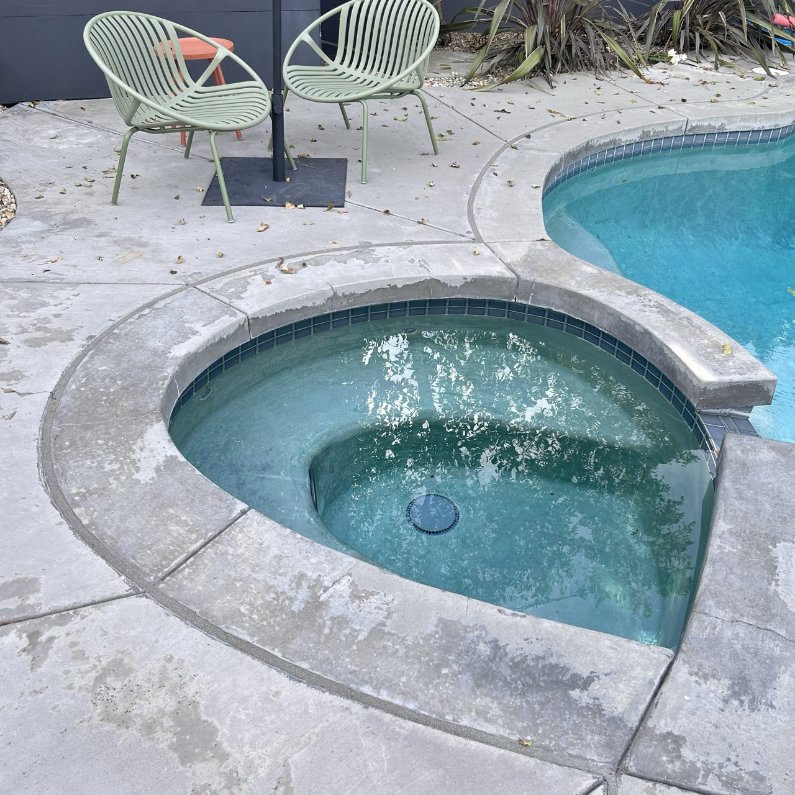
- At the valve panel (back corner near the hot tub), turn the handles to Spa Return and Spa Suction.
- In the cabana, press button 3 on the pump control — this runs the spa automatically for 2 hours, then shuts off. Just press it again if you need more time.
- On the heater, select Spa and set your temperature. It's preset to 102°F — a nice comfortable soak.
- When you're done, come back to the heater and press Spa again to turn off the heat.
- Before leaving, turn the valves back to Pool Return & Pool Suction so the pool returns to its normal filtration cycle and stays clean.
Outdoor Lighting
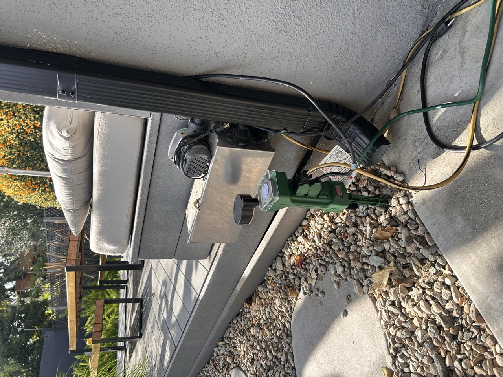
- Look for the green power outlet box at the edge of the deck.
- Flip the switch on the box to turn on the Italian festival string lights strung around the backyard.
- Great for evening ambiance — enjoy!
Outdoor Glassware & Plates
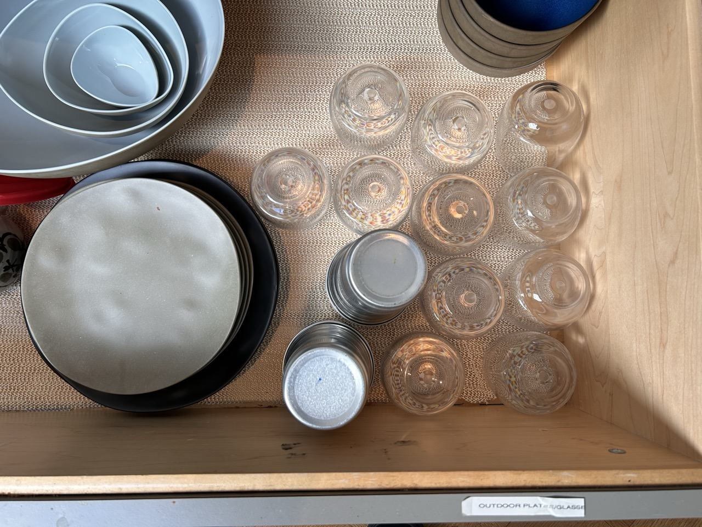
- No glass or pottery around the pool — for everyone's safety, please keep those indoors.
- We've stocked plastic tumblers, aluminum cups, and outdoor plates for use outside and around the pool.
- You'll find them in the lowest drawer to the left of the refrigerator in the kitchen.
Dining & Bars
Highly-rated spots within 1.5 miles of the house
Little Fatty
The neighborhood gem. Scallion pancakes, squid-ink soup dumplings, and a legendary BBQ pork platter with steamed bao. Cocktails next door at Accomplice.
Accomplice Bar
One of LA's best neighborhood cocktail bars — rotating seasonal menu, low-lit and intimate. Connected to Little Fatty, so you can eat and drink all in one spot.
Electric Bleu
Michelin-pedigreed chef Craig Hopson brings upscale French bistro cooking to the neighborhood. Think duck confit, steak frites, and an exceptional wine list.
Taverna at The Mar Vista
Sprawling patio, garage doors that open to the street, and a full bar. LA Times Best of the Southland. Great brunch on weekends, lively bar scene at night.
Cafe Laurent
A beloved Mar Vista institution. Flaky croissants, silky crêpes, eggs Benedict, and a sunny patio. Perfect for a slow morning before hitting the beach.
Blueys Mar Vista
Casual all-day spot with Aussie vibes, great eggs, excellent coffee, and a solid dinner menu. Busy on weekends — arrive early or expect a wait.
Quiadaiyn
Family-run Oaxacan gem. The tlayuda mixta and barbacoa de chivo are must-orders. All-day dining with an authentic, no-frills vibe that keeps locals coming back.
Hatchet Hall
Michelin Guide restaurant with a wood-fire kitchen, sprawling pergola patio, and a bar (Old Man Bar) that's worth a visit on its own. Southern-leaning California fare.
Bigfoot West
Cozy log-cabin bar with a "Cheers" vibe — craft cocktails, pool table, live music, and happy hour till 8pm daily. A reliable neighborhood spot for a laid-back night out.
Loqui
Some of the best tacos in LA — crispy tostadas, birria, and al pastor on a big sunny patio with picnic tables. Cash-friendly and always packed for good reason.
Mar Vista Farmers Market
Sundays 9 AM – 2 PM · 0.3 miles away
One of LA's best neighborhood farmers markets is practically at your doorstep. Every Sunday morning, Grand View Boulevard fills with local farmers, food vendors, live music, and a genuinely great community vibe.
- Fresh-picked produce direct from local farms
- Grass-fed meats, raw cheeses, local honey
- Hot food vendors and coffee
- Free weekly craft workshops
- Dog-friendly with free pet sitting available
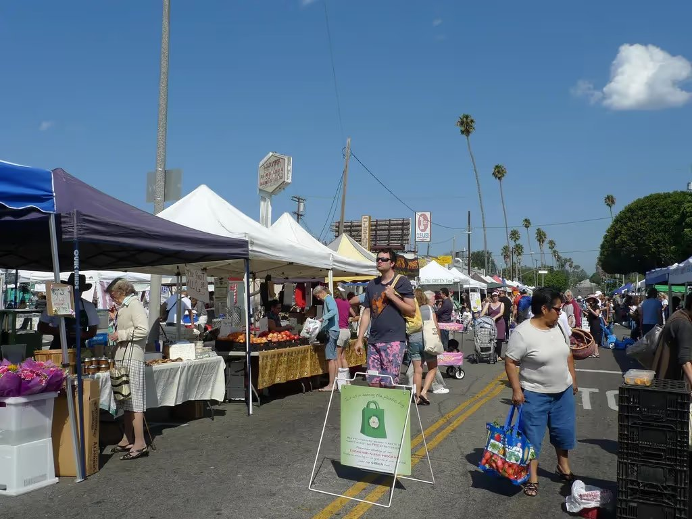
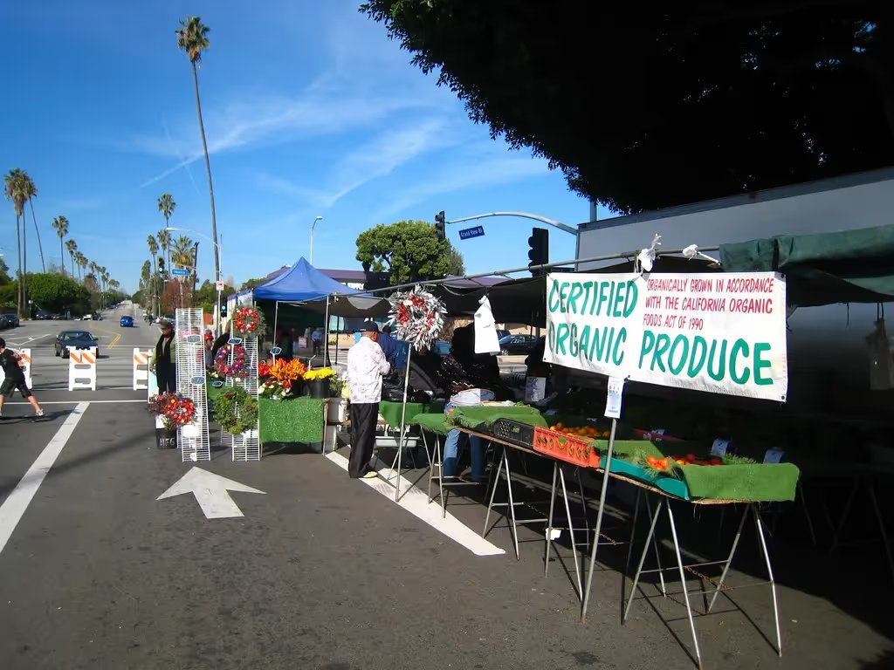
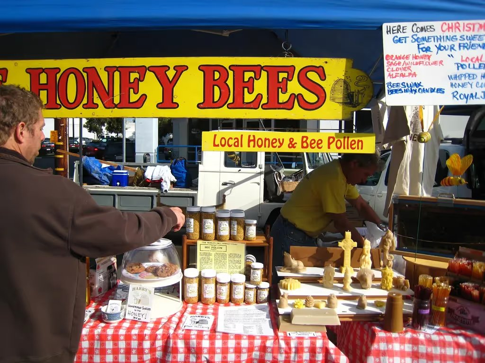
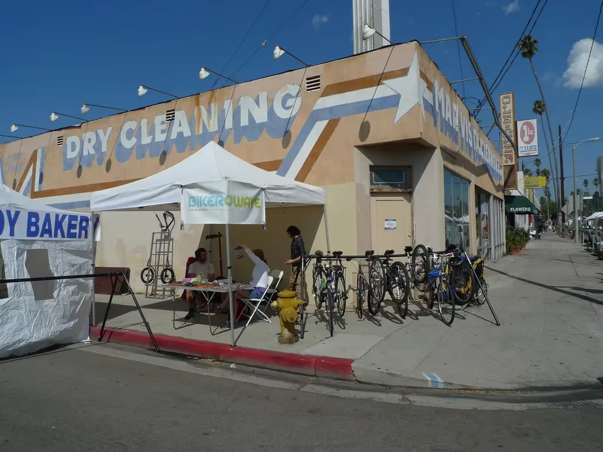
In Case of Emergency
Gas, Water & Electrical
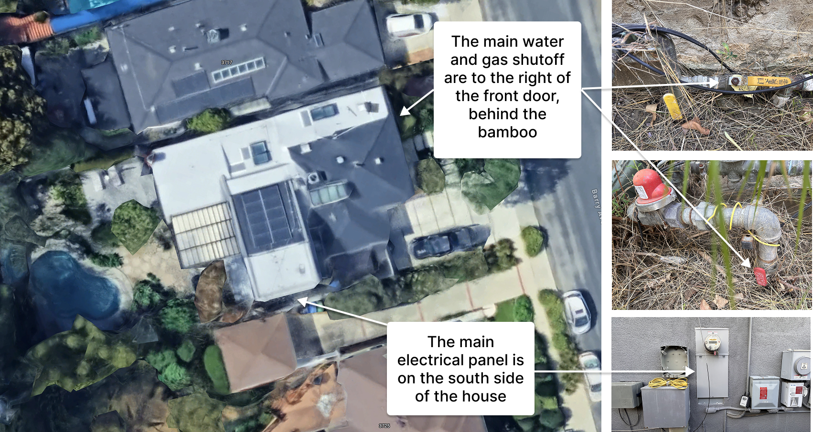
Evacuation
🔥 Fire
- Exit immediately — don't stop for belongings. Close doors behind you to slow the spread.
- Use the front door (Barry Ave) or back gate as primary exits.
- Call 911 once you are safely outside. Do not re-enter.
- Nearest cross street: Barry Ave & Sepulveda Blvd. Meet there to account for everyone.
🌎 Earthquake
- During shaking: Drop, cover, and hold on — get under a sturdy table or against an interior wall, away from windows.
- After shaking stops: Check for injuries. If you smell gas, leave doors open and evacuate immediately — do not use light switches or open flames.
- Expect aftershocks. Stay outside in an open area away from buildings and power lines.
- Call 911 for emergencies; text if voice calls are congested.
⚠️ General
- Emergency services: 911
- Nearest hospital: Cedars-Sinai Medical Center (~10 min, 8700 Beverly Blvd)
- If directed to evacuate by authorities, take Sepulveda Blvd north toward the 405 as primary route.